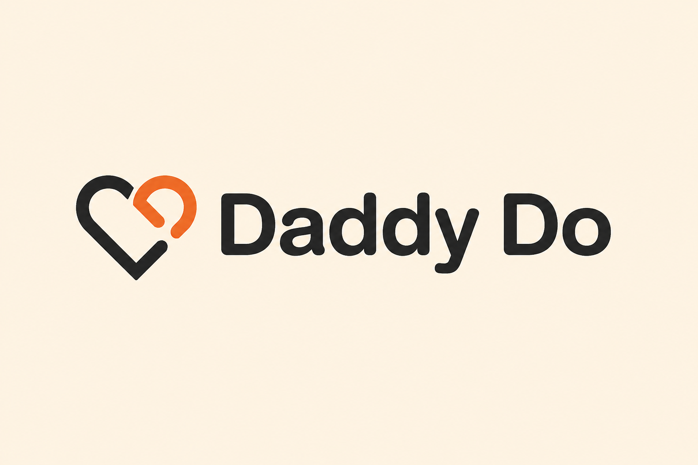

DaddyDo — Freelance UX Engagement
Clarity Over Clutter
Redesigning clarity into a card that tried to say too much at once.
Product Designer
Bringing clarity to complex product experiences.

DaddyDo — Freelance UX Engagement
Redesigning clarity into a card that tried to say too much at once.

Stop guessing - fix what’s actually blocking your growth.

From first glance to reservation - made clear and simple.

Slow down, without overthinking it.

I’m a Product Designer with roots in fashion and a mindset shaped by strategy. I don’t just design screens, I design experiences that connect, communicate, and convert. From running my own fashion brand to executing real-world campaigns at FHM University, I’ve learned how design works beyond visuals, in real life, with real people. Now, I bring that same thinking into digital products, blending creativity, structure, and user experience.
Explore My WorkAvailable for UX/UI design roles, product design projects, and creative collaborations.